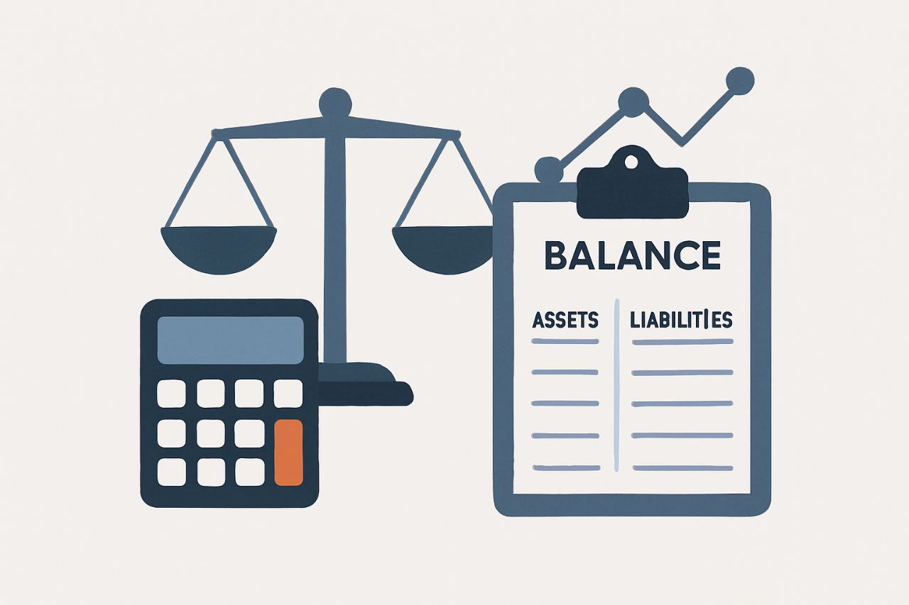

Angineb Castillo
CI: 29.554.181
🔍 Objetivo principal
Su propósito es ofrecer información clara, útil y precisa sobre la situación financiera de una entidad. Esta información es clave para gerentes, inversionistas, bancos y organismos públicos.
🧮 Funciones principales
- Registrar cronológicamente las operaciones económicas.
- Clasificar los datos en cuentas específicas (activos, pasivos, ingresos, gastos).
- Resumir la información en estados financieros.
- Interpretar los resultados para apoyar la toma de decisiones.
📊 Tipos de contabilidad
- Financiera: dirigida a terceros como bancos o inversionistas.
- Administrativa: utilizada internamente para gestión y planificación.
- Fiscal: orientada al cumplimiento de obligaciones tributarias.
🧠 Ejemplo práctico
Una empresa compra mercancía por $500 en efectivo. Según el principio de partida doble:
- Debe: Mercancías (aumenta el activo)
- Haber: Efectivo (disminuye el activo)
Este registro mantiene el equilibrio contable y refleja la operación en los libros.
📊 Balance General
También llamado estado de situación financiera, muestra lo que la empresa posee (activos), debe (pasivos) y le pertenece (patrimonio) en un momento determinado.
🧮 Estructura del Balance
-
Activos: bienes y derechos. Se dividen en:
- Corrientes: efectivo, cuentas por cobrar, inventarios.
- No corrientes: propiedades, maquinaria, inversiones a largo plazo.
-
Pasivos: obligaciones o deudas. Se dividen en:
- Corrientes: cuentas por pagar, préstamos a corto plazo.
- No corrientes: préstamos a largo plazo, obligaciones financieras.
- Patrimonio: diferencia entre activos y pasivos. Incluye capital aportado y utilidades retenidas.
📐 Fórmula contable: Activos = Pasivos +
Patrimonio
Esta formula garantiza que el balance esté equilibrado
| Concepto | Monto (USD) |
|---|---|
| Activos | |
| Efectivo | 5,000 |
| Inventario | 10,000 |
| Equipos | 15,000 |
| = Total Activos | 30,000 |
| Pasivos | |
| Cuentas por pagar | 8,000 |
| Préstamo bancario | 7,000 |
| = Total Pasivos | 15,000 |
| Patrimonio | |
| Capital | 10,000 |
| Utilidades retenidas | 5,000 |
| = Total Patrimonio | 15,000 |
📘 Libro Diario
Es el registro cronológico de todas las operaciones económicas. Cada asiento sigue el principio de partida doble: por cada débito, hay un crédito equivalente.
✍️ Elementos de un asiento
- Fecha de la operación
- Cuentas afectadas (debe y haber)
- Monto
- Descripción o concepto
🧾 Ejemplo
Fecha: 01/11/2025
Concepto: Compra de mercancía al contado
Debe: Mercancías $1.000
Haber: Efectivo $1.000
📊 Estado de Resultados
También llamado estado de pérdidas y ganancias, muestra si hubo utilidad o pérdida en un período. Resume ingresos, costos y gastos.
📐 Estructura básica
- Ingresos operativos
- Costo de ventas
- Utilidad bruta = Ingresos – Costos
- Gastos operativos
- Utilidad operativa
- Otros ingresos y egresos
- Utilidad neta antes de impuestos
- Impuestos
- Utilidad neta del ejercicio
| Concepto | Monto (USD) |
|---|---|
| Ingresos por ventas | 10,000 |
| (-) Costo de ventas | 6,000 |
| = Utilidad bruta | 4,000 |
| (-) Gastos operativos | 1,500 |
| = Utilidad operativa | 2,500 |
| (-) Impuestos | 500 |
| = Utilidad neta | 2,000 |
🧾 Registro contable
Para mantener una contabilidad confiable, cada operación debe registrarse con:
- Exactitud: reflejar fielmente la transacción.
- Oportunidad: registrarse en el momento que ocurre.
- Clasificación adecuada: usar las cuentas correctas.
🧠 Pasos para registrar
- Identificar la transacción
- Determinar las cuentas afectadas
- Aplicar el principio de partida doble
- Registrar en el libro diario
- Trasladar al libro mayor